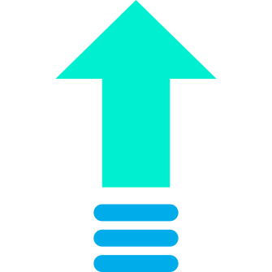

Cartoon - On & On
Show Lyric
[Verse 1] Hold me close 'til I get up Time is barely on our side I don't wanna waste what's left The storms we chase are leadin' us And love is all we'll ever trust, yeah No, I don't wanna waste what's left
[Chorus] And on and on we'll go Through the wastelands, through the highways 'Til my shadow turns to sun-rays And on and on we'll go Through the wastelands, through the highways And on and on we'll go On we'll go
[Verse 2] Finding life along the way Melodies we haven't played No, I don't want no rest Echoin' around these walls Fighting to create a song (yeah) I don't wanna miss a beat
[Chorus] And on and on we'll go Through the wastelands, through the highways 'Til my shadow turns to sun-rays And on and on we'll go Through the wastelands, through the highways And on and on we'll go
[Bridge] And we'll grow in number Fuelled by thunder, see the horizon Turn us to thousands And we'll grow in number Fuelled by thunder, see the horizon Turn us to thousands
[Chorus] And on and on we'll go Through the wastelands, through the highways 'Til my shadow turns to sunrays And on and on we'll go Through the wastelands, through the highways And on and on we'll go
Speed Up

Slow Down
Reset Speed